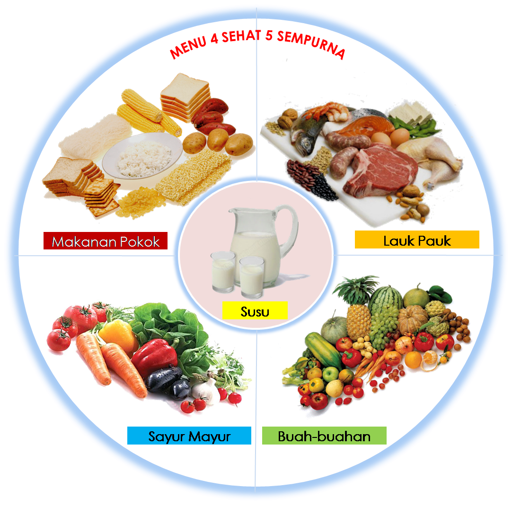

Pentingnya Menjaga Kesehatan Umum
Kesehatan adalah salah satu aspek terpenting dalam kehidupan kita. Tanpa kesehatan yang baik,
sangat sulit untuk menikmati hidup sepenuhnya. Oleh karena itu, penting bagi kita untuk memahami
dan
menerapkan
prinsip-prinsip dasar kesehatan umum dalam kehidupan sehari-hari.
Nutrisi Seimbang

Salah satu kunci utama untuk menjaga kesehatan adalah dengan mengonsumsi makanan bergizi.
Nutrisi seimbang meliputi asupan karbohidrat, protein, lemak sehat, vitamin, dan mineral dalam
jumlah yang
tepat.
Berikut adalah beberapa tips untuk menjaga nutrisi seimbang:
1.Konsumsi Sayur dan Buah: Sayur dan buah kaya akan vitamin, mineral, dan serat yang membantu
menjaga sistem
pencernaan dan meningkatkan kekebalan tubuh.
2.Pilih Protein Berkualitas: Sumber protein seperti ikan, daging tanpa lemak, kacang-kacangan,
dan produk
olahan susu rendah lemak dapat
membantu membangun dan memperbaiki jaringan tubuh.
3.Batasi Gula dan Garam: Konsumsi gula dan garam berlebih dapat menyebabkan berbagai masalah
kesehatan
seperti diabetes dan hipertensi.
Aktivitas Fisik
Olahraga dan aktivitas fisik memiliki peran penting dalam menjaga kesehatan tubuh. Aktivitas
fisik membantu
meningkatkan sirkulasi darah, memperkuat otot
dan tulang, serta meningkatkan kesehatan mental. Berikut adalah beberapa jenis aktivitas fisik
yang bisa
dilakukan:
1.Olahraga Aerobik: Berlari, bersepeda, dan berenang adalah contoh olahraga aerobik yang dapat
meningkatkan
kesehatan jantung.
2.Latihan Kekuatan: Angkat beban dan yoga membantu memperkuat otot dan meningkatkan
fleksibilitas.
3.Aktivitas Sehari-hari: Berjalan kaki, berkebun, dan melakukan pekerjaan rumah juga merupakan
bentuk
aktivitas fisik yang bermanfaat.
Istirahat yang Cukup
Tidur yang cukup dan berkualitas sangat penting untuk kesehatan umum. Kurang tidur dapat
menyebabkan
berbagai masalah kesehatan seperti gangguan kognitif,
peningkatan risiko penyakit jantung, dan penurunan sistem kekebalan tubuh. Beberapa tips untuk
mendapatkan
tidur yang baik meliputi:
1.Ciptakan Rutinitas Tidur: Tidur dan bangun pada waktu yang sama setiap hari membantu mengatur
ritme
sirkadian tubuh.
2.Ciptakan Lingkungan Tidur yang Nyaman: Pastikan kamar tidur gelap, sejuk, dan tenang untuk
meningkatkan
kualitas tidur.
3.Batasi Kafein dan Layar Elektronik: Hindari konsumsi kafein dan penggunaan gadget menjelang
tidur.
Manajemen Stres
Stres yang berkepanjangan dapat berdampak negatif pada kesehatan fisik dan mental. Oleh karena
itu, penting
untuk mengelola stres dengan baik.
Beberapa cara efektif untuk mengelola stres antara lain:
1.Latihan Relaksasi: Meditasi, pernapasan dalam, dan yoga dapat membantu meredakan stres.
2.Aktivitas Sosial: Menghabiskan waktu bersama keluarga dan teman dapat memberikan dukungan
emosional yang
penting.
3.Hobi dan Kegiatan yang Menyenangkan: Melakukan kegiatan yang disukai dapat membantu
mengalihkan pikiran
dari stres.
Kesehatan Rutin
Pemeriksaan kesehatan rutin membantu mendeteksi dini berbagai penyakit dan kondisi kesehatan.
Melakukan
pemeriksaan seperti cek
tekanan darah, tes darah, dan pemeriksaan lainnya secara berkala dapat membantu mencegah
komplikasi yang
lebih serius.
Menjaga kesehatan umum membutuhkan komitmen dan usaha yang konsisten. Dengan mengonsumsi nutrisi
seimbang,
berolahraga secara teratur,
tidur yang cukup, mengelola stres, dan melakukan pemeriksaan kesehatan rutin, kita dapat
meningkatkan
kualitas hidup dan mencegah
berbagai penyakit. Ingatlah bahwa kesehatan adalah investasi terbaik yang bisa kita lakukan
untuk masa depan
kita.